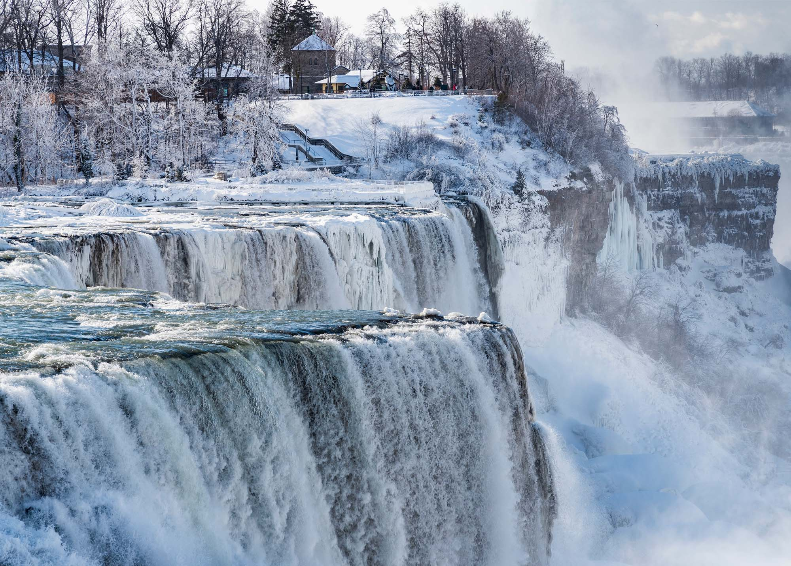
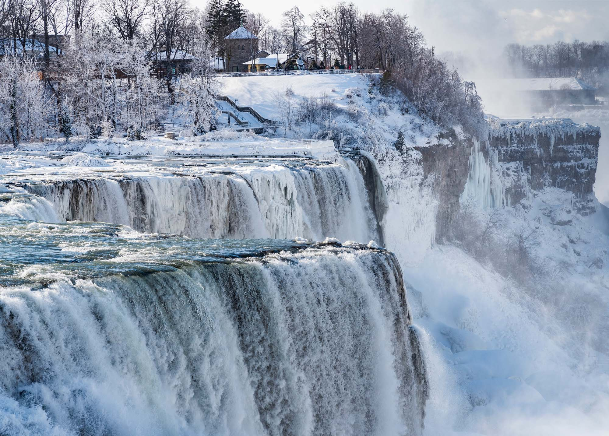
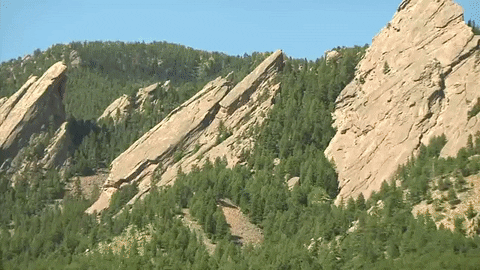

Check out some of my favourite places!
Niagara Falls


Geographical Location: North America
Niagara Falls is located on the border between Canada and the United States. Connecting Lake Erie and Lake Ontario, Niagara Falls has the highest flow rate of any waterfall in North America. The falls are a popular tourist destination, with over 30 million people visiting each year. The falls are also a major source of hydroelectric power for the surrounding area.
There are three waterfalls that make up Niagara Falls: Horseshoe Falls, American Falls, and Bridal Veil Falls. Horseshoe Falls is the largest of the three, and is located on the Canadian side of the border. American Falls and Bridal Veil Falls are located on the American side of the border.
Photo Gallery


 

Vermont


Geographical Location: North America
Vermont is located in the northeastern United States. It is the second least populous state in the country, with a population of just over 600,000 people. Vermont is known for its beautiful landscapes and outdoor activities. It is a popular destination for skiing, hiking, and camping.
Vermont is also known for its maple syrup. It is the largest producer of maple syrup in the United States, producing over 2 million gallons of maple syrup each year. Vermont is also the leading producer of marble in the United States.
Photo Gallery


Lake Tahoe


Geographical Location: North America
When it comes to things to do in South Lake Tahoe, you can shred down the mountain from 10,067 ft. at Heavenly Mountain Resort's peak or you can dive into the depths of Lake Tahoe. It's more than 1600 ft. deep, making it one of the deepest lakes in North America. Needless to say, there's plenty of things to do in Lake Tahoe above and below the surface.
All parts of Lake Tahoe are beautiful and have something unique to offer. South Lake Tahoe is popular for its ski resorts like Heavenly, Sierra at Tahoe and Kirkwood ski resorts. South Lake Tahoe is also popular for its restaurants, shopping, casino resorts and vibrant nightlife.
Photo Gallery


Boulder, Colorado

Geographical Location: North America
Boulder is a city in the state of Colorado, in the United States. It is located at the base of the Rocky Mountains, and is known for its outdoor activities and natural beauty. Boulder is also home to the University of Colorado, which is one of the top public universities in the country.
Boulder is a popular destination for hiking, biking, and rock climbing. It is also known for its restaurants, breweries, and art galleries. Boulder is a great place to visit for anyone who enjoys outdoor activities and natural beauty.
Photo Gallery


Yellowstone National Park, Wyoming


Geographical Location: North America
Yellowstone National Park is located in the western United States, in the states of Wyoming, Montana, and Idaho. It is the oldest national park in the country, and is known for its geothermal features, including geysers, hot springs, and mud pots. Yellowstone is also home to a wide variety of wildlife, including bison, elk, moose, bears, and wolves.
Yellowstone is a popular destination for hiking, camping, and wildlife viewing. It is also a popular destination for winter sports, including skiing, snowshoeing, and snowmobiling. Yellowstone is a great place to visit for anyone who enjoys the outdoors and wildlife.
Photo Gallery